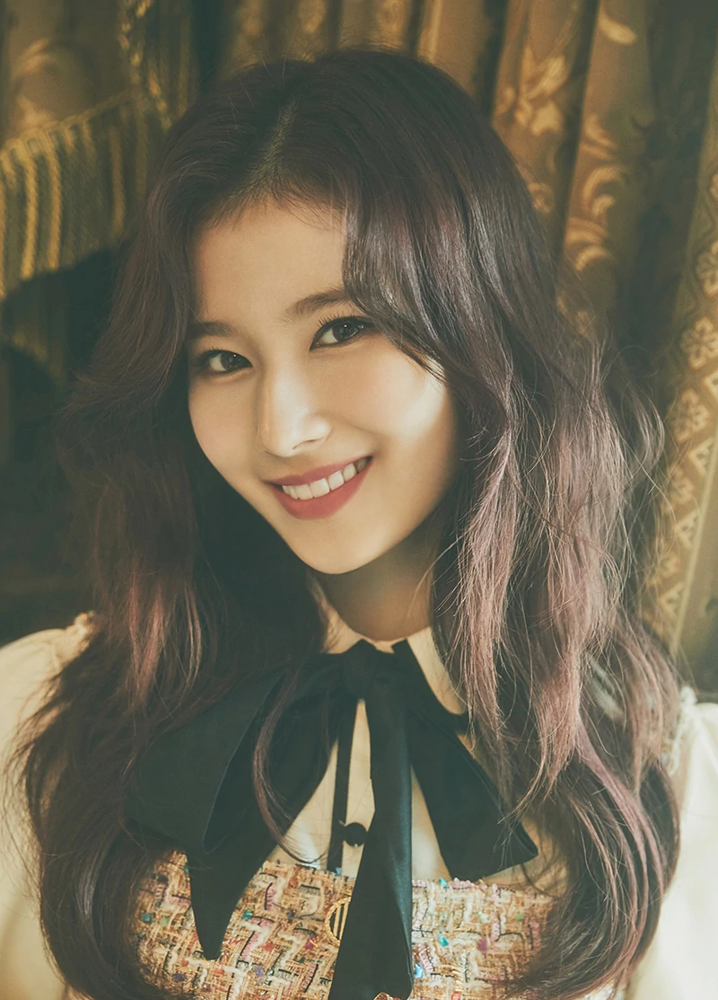

|  |
Sana Minatozaki (Hangul: 미나토자키 사나), better known as Sana (Hangul: 사나), is a Japanese singer. She is a member of Twice as a vocalist of the group. Sana has an infectiously bright personality and loves to captivate fans with her quirky charm. One of Sana's memorable clips was of her saying "Cheese Kimbap" in a cute way. Source: Twice Wiki
|
| Birth Date: | December 29, 1996 |
| MBTI : | ENFP-T |
| Instagram : | m.by__sana |
| Individual Color: | Purple |
| Position: | Sub-Vocalist |